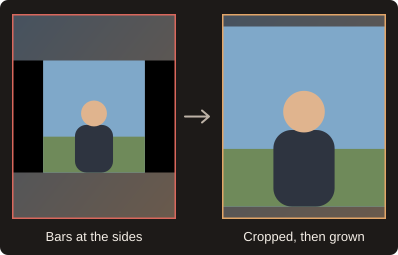

WildScale 1.3.5 User Guide
WildScale reframes a horizontal edit for vertical and social formats inside Adobe Premiere Pro. You frame a shot once, and it carries that framing through the rest of your timeline. This guide covers everything in the panel, from the first install to the odd problem you might run into.
What you need
- Adobe Premiere Pro 25.0 or later
- On Windows: Windows 10 or 11, 64-bit, and WildScale Setup 1.3.5
- On a Mac: macOS 13 or later on an Intel processor, and the WildScale 1.3.0 package. It has been tested with Premiere Pro 26.0 on macOS 15. Apple silicon Macs are not tested.
- FFmpeg, for faster cut detection and for motion detection. Without it, a built-in decoder finds the cuts and each clip is framed as a whole.
A graphics card helps but is not required. WildScale uses it for text and object detection when it can, and uses the processor when it cannot. The top of the panel shows which one is active. On Windows, a computer with two graphics cards, such as a laptop with NVIDIA and AMD or Intel graphics, uses both.
Installing
- On Windows, run
WildScaleSetup-1.3.5.exe. Close Premiere Pro first. You do not need administrator rights. For a Mac, see below. - Restart Premiere Pro.
- Open the panel from the Window menu. In Premiere Pro 26.5.2 and later it is under UXP Plugins. In Premiere Pro 25.0 to 26.5.1 it is under Extensions.
WildScale Setup installs the right panel for both. The panel for 25.0 to 26.5.1 has the same look and uses the same service.
WildScale has three parts. The panel is what you see in Premiere. The service does the heavy analysis. A small launcher runs when you sign in to your computer and starts the service when the panel asks, so you never have to start anything yourself.
Installing on a Mac
- Quit Premiere Pro completely with Cmd+Q. A Premiere that stays open keeps looking for the old panel.
- Open
WildScale-1.3.0-mac-x86_64.pkgand follow the steps. It asks for your administrator password. - The package is not notarized by Apple yet, so macOS may refuse to open it. Open System Settings > Privacy & Security, scroll down and choose Open Anyway.
- Start Premiere Pro and choose Window > Extensions > WildScale.
macOS may tell you that WildScale Monitor can run in the background. That is expected. You can manage it in System Settings > General > Login Items & Extensions.
WildScale Monitor
The launcher is a small film strip in the Windows system tray or the Mac menu bar. On Windows, it may be under the arrow beside the clock. It shows what the service is doing:
- Dim: the service is asleep and wakes when the panel needs it.
- Solid: the service is awake.
- Rolling, with a percentage: a job is running. On Windows, point at the icon to see the percentage.
Click it to see the current step, start or stop the service, or open the last error. On Windows, the Monitor stays in the tray while the service sleeps, and Start service wakes it. If you quit it, the panel cannot start the service until it is back. It returns the next time you sign in, and on Windows you can also open WildScale Monitor from the Start menu.
FFmpeg on a Mac
The package does not include FFmpeg. WildScale looks for it on the system path, in /usr/local/bin and in /opt/homebrew/bin. With Homebrew, run brew install ffmpeg, then click Stop service in WildScale Monitor.
Removing WildScale from a Mac
Quit Premiere Pro, quit WildScale Monitor, then delete /Applications/WildScale Monitor.app, /Library/LaunchAgents/com.wildscale.launcher.plist, /Library/Application Support/WildScale and /Library/Application Support/Adobe/CEP/extensions/com.wildscale.panel. Your own marks and fixes are in ~/Library/Application Support/WildScale.
Your first run
- Make a backup first. WildScale changes the open sequence directly, so duplicate it if you want to keep the original.
- Select your raw clip and click Cut selected clips in Scene Edit Detection.
- Frame one shot of your speaker by hand, for example at Scale 200, moved to where you want it.
- Select that clip in the timeline.
- In References, pick a preset, such as Main speaker, and click Remember selected clips.
- Click Rescale.
When the panel opens, only Scene Edit Detection is open and a short popup lists these steps. Each clip changes as soon as it is ready, and the playhead follows along. The status line counts the clips and a bar shows how far along you are. Stop halts the run at once and puts back every clip it changed: Scale and Position, crops, blur layers and its cuts.
The top of the panel
- Dot: green means the service is on, yellow means it is starting, and red means it is off.
- Refresh or Start service: checks the connection, or starts the service when it is off.
- Free memory: shuts the service down and gives back its memory. The next action starts it again in a few seconds.
- Settings: opens system checks and resource use.
- ?: opens the built-in help.
- Version: shown beside the logo.
1. Scene Edit Detection
Cut selected clips reads every frame of the selected clips, or of all clips when none are selected, and cuts them where the shots change. Each cut lands on the first frame of the new shot, also in phone video with a varying frame rate. Soft transitions are cut too: a dissolve is cut where the new shot takes over half of the picture, and a fade through black is cut in the middle of the black, so the shot after it can be rescaled on its own. A slow zoom, or a lone fade from or to black, is not a cut. It decodes on your graphics card when the video format allows it. Without FFmpeg, it uses a slower built-in decoder. On Windows with two graphics cards, a long clip is split between both cards and the processor, which takes about half the time. The panel shows progress, and Stop ends the search for cuts and puts the clip back whole. If detection cannot run, the status text says why. Premiere's detection only runs when you tick Use Premiere's own detection instead.
Premiere gives UXP plugins no razor, so in Premiere Pro 26 the clip is laid down again from its source file, piece by piece, video and audio, keeping its Scale and Position. Other effects on that clip are not kept, clips with changed speed stay whole, and undoing takes several steps. Use it on raw footage in a duplicate sequence. In Premiere Pro 25, the real razor is used.
Every piece stays linked to its own sound and selects like any clip, also after Premiere's own detection. Select at playhead, then change Scale and Position in Effect Controls or drag in the Program Monitor with your usual shortcuts.
2. Preview and selection
Capture frame loads the shot under the playhead straight from the source file, so you see the whole frame and not only the crop. Press Shift+C, or C, to do the same while the panel is active. In the timeline, C stays Premiere's own Razor key.
Use the mouse wheel to zoom and the middle button or Hand to pan. Fit, Center and 100% work like the Premiere monitor.
Drag over the picture to mark something:
- Must show keeps a logo, face or object in frame.
- Must hide keeps it out of frame. If it cannot be hidden without losing something that must stay, the final status tells you.
Click a mark to adjust it. Drag it to move it, or drag a handle to resize it. The arrow keys move it one pixel, or ten with Shift, and Delete removes it. You can also type exact X, Y, W and H values in pixels, and switch it between Must show and Must hide.
Mark small things and not the whole shot. With Remember marks for future projects on, marks carry over to new projects. Marks larger than a quarter of the frame only apply to the current run.
Auto detect
With Auto detect: read the frame when the playhead stops on, you do not need to capture at all. Rest the playhead on a shot for a moment and the frame appears, with what WildScale found in it outlined:
- Blue: objects, such as people, cars, phones, laptops, animals and food, with how sure WildScale is
- Yellow: faces
- Orange: titles
Click an outline to turn it into a mark with the tool you have chosen, Must show or Must hide. Where outlines overlap, the click takes the smallest, such as a face inside a person. Anything you leave alone is decided by WildScale as usual. Dragging still draws a mark by hand, also over an outline.
Auto detect only works while Preview and selection is open. It waits while a job runs or while you drag a mark, and it never starts a stopped service. If it gets in the way, or misbehaves, turn it off. Shift+C still captures the frame and finds what is in it. Detection can miss things in dark or night footage, so mark those by hand.
3. References
A reference tells WildScale how shots like this one should look. Select a clip, choose a preset and click Remember selected clips. You can add several, each with its own preset.
- Main speaker: uses your framing and follows that person into other shots.
- Same angle: pastes your exact Position and Scale onto matching shots.
- Same person: keeps that person's face where you put it, in any shot, at your Scale.
- Any speaker: does the same for every large face.
- Center without blur: fills the canvas from the middle of the shot.
- Whole frame with blur: shows the entire shot over a blurred background.
During Rescale, matching clips get the reference's exact values, unless a title, a hidden area or blur needs something else.
Your references appear in a list under the buttons. Click a row to select that clip and move the playhead to it, and use Remove to drop one. A clip you choose as a reference always follows your choice, even when it looks like another reference.
Each reference also keeps its own rules for the shots that match it:
- Graphics: leave them as they fall: changes nothing.
- Graphics: whole or gone, never cut off: a graphic is either fully on the canvas or fully off it.
- Graphics: keep them out of the canvas: no graphic shows.
- Graphics: keep them whole on the canvas: every graphic must fit.
- May zoom out to frame size for this: allows the widest crop that still fills the canvas, when moving alone is not enough.
Graphics here means what WildScale can read: titles, text and text-heavy pages. For a logo or a picture without text, use Must hide or Must show in Preview and selection. A rule that cannot be met leaves the shot as it was and counts under could not hide. The list is saved with the sequence.
If several clips were moved the same way, select only the reference clip. Clear removes the references you added.
Copy Scale and Position reads those two values from the selected clip. Paste to selected applies them to the clips you select, as one undo step, like Paste Attributes for those two values.
4. Format
WildScale reads the size of the open sequence and shows it here, along with its shape, such as 4:5. It updates by itself when you switch sequences.
To use a different size, turn on Use a custom size and type the width and height.
5. Shot groups
After a run, clips are sorted into groups, each with its own color in the panel:
- Speaker: a large face in most of the clip
- Titles: a title on screen
- Graphics: pages, busy text, split screens and graphics flying in
- Repeated shot: a look that returns in three or more clips
- B-roll: everything else
On the timeline, clips take a matching label: Speaker is Cerulean, Titles are Mango, Graphics are Rose, and other shots are Forest. Premiere gives every clip of one source the same color, so WildScale adds one subclip per group to your project, named like Video [WildScale Speaker], and lays clips down again from it. Your original footage keeps its color. Keep those subclips in the project, because the timeline uses them. Top clips of an existing back blur and clips with changed speed keep their color. Scale and Position are kept, but other effects are not, so turn off Color clips on the timeline by group in Options to keep them.
Click Select to select a whole group in the timeline and open a grid of its takes. Click a picture to jump to that clip and check it. A good way to use this is to fix one clip, copy it, select its group and use Paste Attributes on the rest.
Sorting is automatic and will sometimes get a clip wrong, so look through a group before changing all of it.
6. Options
- Frame clips without a reference by the objects in them: people, cars, animals, food, screens and props decide the crop of a clip no reference covers. A face sits high, a car or a document stays whole, and two people stay together when they fit.
- Object framing style: All studied pages uses framing measured from popular Reels pages. Like my own edits appears once WildScale has learned enough from you, and frames the timeline your way. The note below it says how many of your decisions it knows.
- Learned preset: applies a saved set of framed shots to shots no reference covers. Mr.Rescale comes with WildScale and holds framing collected from real Reels edits. Choose No learned preset to work only from your own references.
- Shot matching: sets how alike shots must be. Strict takes only near-identical shots, and Loose also takes shots that drifted or changed light.
- Fast frame reading from the source file: reads frames directly from your media. It is much faster. Turn it off only if frames look wrong.
- Scene Edit Detection on an uncut clip: lets Rescale run Premiere's detection on a sequence that holds a single clip.
- Zoom slightly toward elements: tightens the crop a little around marked elements.
- Keep all on-screen text in frame: protects titles from the crop.
- Keep text inside the safe zone: keeps text away from the edges and social app buttons.
- Detect animated transitions and graphics: splits clips that hide transitions, split screens or graphics. The first scan of a video takes about 40 seconds per hour of footage, and later runs reuse it.
- Shrink the shot when elements do not fit: allows the whole-frame view with a background.
- Blurred background instead of black bars: builds the back blur.
- Fix black bars and split screens by itself: zooms past bars or shows the whole picture, and keeps the crop off a split screen's seam.
- Crop black bars inside the footage: adds a Crop effect when bars would show on the canvas.
- Split screens: Show both sides with blur, or Follow the person's side.
7. This sequence
References, groups, copied framing and a list of what WildScale did are saved per sequence on your computer. They return when you select that sequence again, even after closing Premiere. Clear this sequence removes them.
8. Settings
Settings at the top of the panel checks memory, the processor, your graphics card, models and disk space. Green is fine, yellow still works but slower or lighter, and red needs fixing before a long run.
Resource use decides how hard WildScale works beside Premiere. Auto reads free memory and picks a mode, and on a 16 GB computer it stays at Balanced or lower.
- Full: checks text about every 1.5 seconds.
- Balanced: checks less often and frees memory after each run. Very short titles can be missed in long clips.
- Memory saver: reads one clip stream at a time and checks about every 4 seconds. Look over clips with text afterward.
- Low latency: the lightest mode, for older or slower computers. It checks the fewest frames, skips the motion scan and uses two processor threads so Premiere stays responsive. Short titles and animated changes inside a clip can be missed, so check the result. On a computer with four cores or fewer, Auto picks it when under 4 GB of memory is free.
When less than 1 GB of memory is free, analysis pauses for up to 20 seconds to leave Premiere room.
Graphics cards is for computers with two. Auto uses both: cut detection splits a long clip between the cards and the processor, and analysis sends each frame to the card that is free first. The faster card does most of the work, and the second one helps most while the first is busy, for example while Premiere renders. Choose Fastest card only to leave the second card alone.
9. Appearance
Theme sets the colors and Element style sets the shape and density of the controls. Mix them however you like. WildScale remembers your choice. Click any card header to collapse it.
10. Memory
- Remember references from every run: keeps framing you set by hand for future projects.
- Free memory after every run: shuts the service down when Rescale ends, so Premiere has more room.
- Learn from selected fixes: fix a clip by hand, select it and click this. WildScale frames that shot your way next time.
- Forget fixes: clears everything learned this way. Try this first if framing keeps going wrong.
Saved marks are listed here, each with a Delete button.
Your edits
WildScale also learns by itself from the way you work. Every reference you set, and every clip you moved by hand away from WildScale's plan, becomes one decision in a small database on your computer. WildScale reads that shot again, finds the people, text and objects in it, and measures where you put the subject and how large. It stores those measurements only, never the pictures.
The same framing pasted onto many clips counts once. When you have made at least three decisions for one kind of shot, such as two people or a person with an object, your habit comes before the studied pages. Learning runs after each saved run and a minute after the service starts, on the processor, so Premiere keeps its graphics card.
Running Rescale again
WildScale saves how every clip was cut and placed after each cut and each Rescale. Before the next Rescale it compares that with the timeline, and clips you moved by hand are learned as fixes. WildScale remembers its plans per sequence. After you add or move a reference, only the clips that reference touches are reworked, and the rest stay as they are. Changing settings, marks, memory or a face preset reworks every clip. Rework every clip on the next Rescale in Options forces a full run.
How the framing decisions work
When a title runs past the crop, WildScale tries a small sideways move that keeps the speaker in frame. If that is not enough, it cuts to the whole frame over a blurred background for as long as the title is on screen, then cuts back.
Back blur always uses two layers. The lower clip sits at Scale 500 with Gaussian Blur and lowered opacity for soft ambient color. The upper clip fits the frame and has a gentle drop shadow. Premiere's Scale to Frame Size switch is not available to plugins, so WildScale sets the Scale value that gives the same result.
When a clip holds an animated transition, WildScale splits it into takes and frames each one separately, with a hard cut at the transition.
Running Rescale again does not add a second background. It only reframes the clips above the existing one.
Worked examples
These drawings show what each feature does. Every example starts from a normal Rescale.
Black bars on top and bottom. Your clip has bars inside the video itself, and the whole picture sits on a blurred background.

WildScale measures the bars on several frames of the clip and adds a Crop effect with exactly that much, plus 0.3 percent so no dark line stays. Bars are often about 10 to 11 percent, and often less. The report shows black bars cropped.
Black bars at the sides. WildScale only crops the sides when bars are really there.

Left and right are measured on their own, and the picture then grows to fill the canvas width.
A split screen. A normal crop lands on the seam and cuts both shots.

In Options, Split screens chooses the fix. Show both sides with blur keeps the whole picture. Follow the person's side crops the panel that holds a face and leaves the seam out.
A graphic cut off by the canvas. Set the rule on a reference, and it applies to every shot that matches it.

Whole or gone moves the crop until the graphic is fully out or fully in, and the person stays in frame. With May zoom out to frame size, WildScale can also go to the widest crop that still fills the canvas, for shots a move alone cannot fix.
A clean run from raw footage.
- Duplicate your sequence and put the raw clip on V1.
- Click Cut selected clips. The status shows
Finding cuts 34/100…, thenMade 268 cuts (graphics card). - Frame one speaker shot by hand, select it, and click Remember selected clips with Main speaker.
- Find a shot that should stay whole, select it, and remember it with Whole frame with blur.
- Click Rescale. The report shows lines such as
black bars cropped: 21andcanvas problems fixed: 14. - Fix any shot by hand. On the next Rescale, WildScale learns that fix without you clicking anything.
- Click a row in the References list to jump straight to that clip.
Your privacy
Frames are analyzed on your computer by the local service, which only listens on your own machine. Your footage is never uploaded.
Troubleshooting
The dot stays red. Click Start service. If that does not help, sign out of your computer and back in, or reinstall WildScale. On a Mac, check that the film strip is in the menu bar; if it is not, open WildScale Monitor from Applications.
Page failed to load, on a Mac. Quit Premiere Pro with Cmd+Q and start it again. This happens when WildScale was installed while Premiere was open.
WildScale is not under Window > Extensions, on a Mac. Run the package again, then restart Premiere Pro.
Frames look wrong or come from the wrong moment. Turn off Fast frame reading from the source file in Settings.
Too much blur. Delete large marks in Memory, then click Forget fixes.
A clip is not recognized. Add it as another reference, or fix it by hand and click Learn from selected fixes.
No motion detection. Check that FFmpeg is installed and on your system PATH.
Auto detect captures frames you do not want, or slows Premiere. Turn off Auto detect in Preview and selection and use Shift+C instead.
Service: Not Found. An older service is running. Install the current WildScale Setup.
A piece is missing after cutting. Press Undo until the clip is whole, then send us the status text.
Something failed. The last line of the panel shows the error. Include that text when you contact support.
Good to know
- WildScale changes the open sequence directly. Undo works, but one run makes many small steps, so a duplicate is the safer backup.
- Blur needs a free track above the clip. If that track is in use, the clip is skipped and the status tells you.
- In Premiere Pro 25.0 to 26.5.1, the new cutting and paste tools are not fully tested yet. All clips in the sequence must have the same resolution, and the top layer over a blurred background does not carry the original clip's effects.
- The Mac version needs an Intel processor and is not notarized by Apple yet.
Version history
1.3.5: Windows: auto detect in Preview and selection shows the objects, faces and titles in the frame when the playhead stops, and a click turns one into a mark. Shift+C captures by hand.
1.3.4: Windows: both graphics cards work together, finding cuts in about half the time. WildScale learns your references and hand fixes into Your edits, with the Like my own edits style. Fixes the tray icon that did not appear in 1.3.3.
1.3.3: Windows: dissolves and fades through black are cut, Stop halts at once and puts back what the run changed, WildScale Monitor stays awake, and every cut piece stays linked to its sound.
1.3.2: Windows: object detection frames clips without a reference by the people, cars, animals, food, screens and props in them.
1.3.1: Windows: the service no longer stops while you capture a frame, cuts land on the exact frame, and the service opens the graphics card only when an analysis starts.
1.3.0: First Mac version. On both systems: a styled installer, WildScale Monitor and the Low latency mode.
1.2.0: Brings together the automatic canvas fixes, rules per reference, the Mr.Rescale preset and support for Premiere Pro 25.0 and later.
1.1.9: Rescale no longer stops on a failed system check, and service errors now say what went wrong.
1.1.8: Cut selected clips always uses WildScale's own detection, and the status text says why when it cannot run. Premiere's detection only runs when you tick it. Marks in Preview can now be moved, resized and set to exact pixel values.
1.1.7: WildScale loads in Premiere Pro 26.0 to 26.5.1, under Window > Extensions.
1.1.6: The launcher and the service have the WildScale icon with a gear.
1.1.5: WildScale now finds black bars and split screens, crops the bars and fixes the framing by itself. Each reference has its own rules for graphics. Reference list with one-click jumps. Hand edits are learned on the next Rescale. A clip you choose as a reference always follows your choice. Rescale no longer stops on clips Premiere has not finished placing.
1.1.4: If the graphics card finds no cuts, WildScale reads the clip again on the processor. The status text shows what was read.
1.1.3: Cut detection no longer needs FFmpeg. A built-in decoder takes over, on your graphics card when it can.
1.1.2: Cut detection shows progress and can be stopped. Premiere's detection takes over by itself when WildScale's cannot run, fails, or finds no cuts.
1.1.1: Timeline colors now stay on clips, and clips Rescale leaves unchanged get their color too.
1.1.0: Frame-exact cut detection on the graphics card, cuts applied to raw video and audio, Copy and Paste of Scale and Position, exact paste from references during Rescale, Same person and Any speaker presets, Shot matching, real timeline colors by group, a grid of takes for each group, sessions saved per sequence, faster repeat runs of Rescale, Settings with system checks, automatic resource modes for 16 GB computers, and a start guide.
1.0.0: First release.
Support
email at drugela.music@gmail.com or GitHub Issues